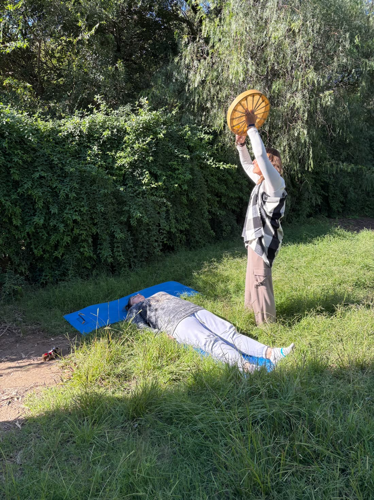
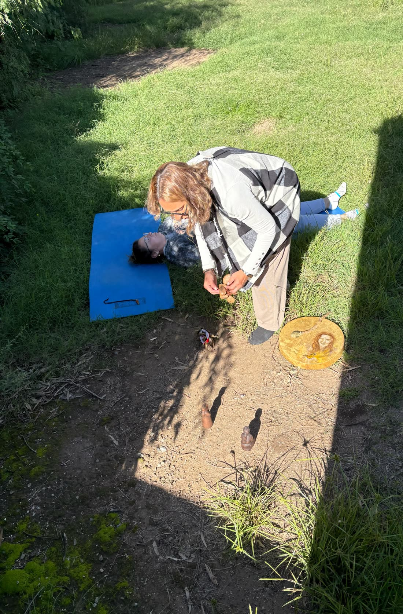
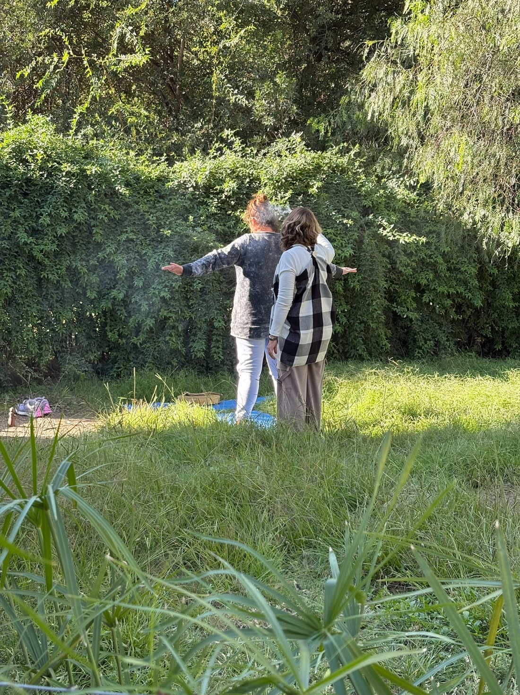
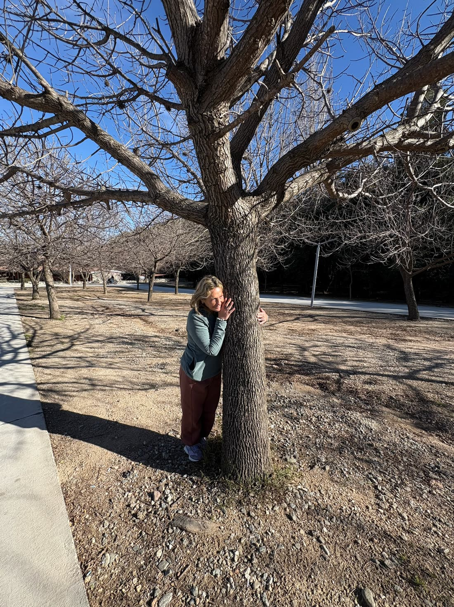

Coaching Ontológico
Entrenate para acompañar a otros desde el lenguaje, las emociones y el cuerpo. Dejá de vivir en piloto automático y aprendé a crear desde la elección consciente.
Ver la formación →Potenciando tu SER ® — te acompaño a volver a vos.
 25 años acompañando
25 años acompañando
Soy Eleonora. Hace 25 años acompaño procesos profundos de cambio, sosteniendo a más de mil personas en su camino. Cada formación que recorrí fue una respuesta a una pregunta que la vida me hizo.
Uno lo humano desde muchos lugares: el derecho, la psicología social, el coaching y las terapias holísticas. Pero siempre con la misma brújula — potenciar tu SER, ayudarte a reconectar con tu propia sabiduría.
Formaciones para quienes quieren profesionalizar su mirada o profundizar en su propio camino interior.
Entrenate para acompañar a otros desde el lenguaje, las emociones y el cuerpo. Dejá de vivir en piloto automático y aprendé a crear desde la elección consciente.
Ver la formación →"Familias que sanan, almas que florecen." Revelá y saná los patrones que se repiten en tu línea ancestral para liberar tu presente.
Ver la formación →Un entrenamiento en presencia y atención plena para habitar el aquí y ahora, bajar el ruido mental y reconectar con lo esencial.
Ver la formación →Sesiones individuales, online, donde el cuerpo, las emociones y el espíritu trabajan juntos. Cada terapia es una puerta distinta a la misma transformación.
Accedé a la sabiduría profunda de tu alma. Descubrí el porqué de tus experiencias y saná bloqueos invisibles.
Conocer más →Un encuentro con tu energía femenina más profunda. Soltá memorias, reconectá con tu poder creador.
Conocer más →Una lectura energética de los códigos que guardás. Reordená lo que viniste a ser y activá tu propósito.
Conocer más →Acompañamiento del duelo y de los cierres de ciclo. Aprender a vivir con más presencia, sentido y paz.
Conocer más →Un estado natural donde el cambio real ocurre. Accedé a tu sabiduría inconsciente para crear desde ahí.
Conocer más →Escribime y conversamos. Juntas vemos qué camino resuena con el momento que estás atravesando.
Hablar con Eleonora →Momentos de sesiones, ceremonias y trabajo energético. Lo que pasa cuando el alma se anima a soltar.






Sí. Trabajo de manera online por videollamada, lo que me permite acompañarte estés donde estés. Coordinamos día y horario por WhatsApp según tu disponibilidad.
No hace falta que lo sepas de antemano. Escribime y conversamos sobre lo que estás atravesando; desde ahí te oriento sobre el camino que más resuena con tu momento.
No. Las formaciones están pensadas tanto para quienes quieren profesionalizarse como para quienes buscan profundizar en su propio proceso. Cada grupo se adapta a sus integrantes.
El valor depende de la terapia o formación y de la modalidad. Te lo paso por WhatsApp y lo conversamos sin compromiso.
No. Son un acompañamiento complementario al servicio de tu bienestar. Si en algún momento hiciera falta otro abordaje, te lo voy a decir con claridad y honestidad.
Mandame un mensaje y conversamos. Lo que tenga que pasar, pasa después — a tu tiempo.